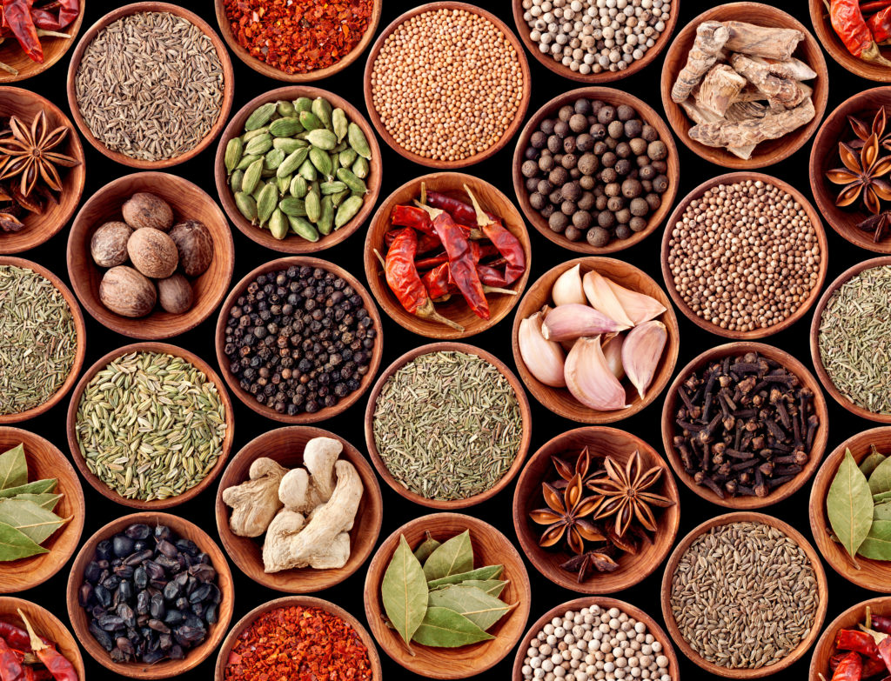

Odin Recipes

Look at all those ingredients looking so good!
Description
This page is for the best recipes I've tried so far. A beverage, and two perfect main dishes. Give them a try, their links are below.
At the bottom of each page there should be links to the actual recipes videos and instructions. Enjoy!
The Best Recipes
- World's Best Lasagna
- Freshest Lemondade Ever
- Best Chicago Style Hotdogs